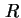
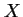
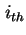
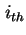
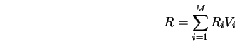

ในระบบ Time Sharing เราสามารถแบ่งระบบออกเป็นระบบย่อยสองระบบได้แก่ ระบบเทอร์มินอล และ ระบบกลางที่ประกอบด้วยอุปกรณ์ที่เหลือ และตัวประมวลผลกลาง ผู้ใช้งานระบบจะใช้เทอร์มินอลหนึ่งชุด และอุปกรณ์ที่เหลือจะถูกใช้งานร่วมกันโดยผู้ใช้ทุกคน
เนื่องจากกฎของ Little สามารถใช้การงานทุกระบบย่อย โดยสามารถนำมากับระบบกลางกลางเราจะได้
ในที่นี้ คือจำนวนงานที่อยู่ในระบบงาน  คือเวลาตอบสนองของระบบ และ  คืออัตราความสำเร็จของระบบ
ให้ค่า  เป็นความยาวคิวของอุปกรณ์  เราจะได้
เป็นความยาวคิวของอุปกรณ์  เราจะได้
| (7.48) |
แทนค่า  ในสมการ 7.51 เราจะได้
ในสมการ 7.51 เราจะได้
| (7.49) |
ทำการหารสมการข้างบนด้วย และใช้กฎการไหลต่อเนื่องของงาน เราจะได้
| (7.50) |
หรือ
|  | (7.51) |
กฎขั้นต้นเรียกว่ากฎเวลาตอบสนองทั่วไป (General Response Time Law) ซึ่งแสดงถึงว่าค่าเวลาที่งานใช้ในแต่ละอุปกรณ์ คูณกับ อัตราแวะเวียนของทุกอุปกรณ์ในระบบ